The company’s tagline
The company says its AI platform exposes fake accounts, deepfakes and coordinated influence campaigns.
The base is small, and growth was partly offset by customers that did not renew. H1 2026: $3.3M revenue, $14.2M net loss (up from $5.8M).
Collects public data from social media and news sites.
Its algorithms assess authenticity and sentiment and flag fake accounts.
Reports the source and spread of what it flags, so customers can decide what to do.
Step names and verdicts as described by the company.
Advertisement. Not an offer, advice or recommendation. Unaudited figures from Cyabra’s SEC filings. Forward-looking statements. Risks: going-concern doubt, losses, Nasdaq listing notices (delisting possible; reverse split proposed), dilution (shares about doubled since August; warrants; resale registrations). See SEC filings.